Uncloneable encryption is a cryptographic primitive which encrypts a classical message into a quantum ciphertext, such that two quantum adversaries are limited in their capacity of being able to simultaneously decrypt, given the key and quantum side-information produced from the ciphertext. Since its initial proposal and scheme in the random oracle model by Broadbent and Lord [TQC 2020], uncloneable encryption has developed into an important primitive at the foundation of quantum uncloneability for cryptographic primitives. Despite sustained efforts, however, the question of unconditional uncloneable encryption (and in particular of the simplest case, called an "uncloneable bit") has remained elusive. Here, we propose a candidate for the unconditional uncloneable bit problem, and provide strong evidence that the adversary's success probability in the related security game converges quadratically as $\frac{1}{2}+\frac{1}{2\sqrt{K}}$, where $K$ represents the number of keys and $\frac{1}{2}$ is trivially achievable. We prove this bound's validity for $K$ ranging from $2$ to $7$ and demonstrate the validity up to $K = 17$ using computations based on the NPA hierarchy. We furthemore provide compelling heuristic evidence towards the general case. In addition, we prove an asymptotic upper bound of $\frac{5}{8}$ and give a numerical upper bound of $\sim 0.5980$, which to our knowledge is the best-known value in the unconditional model.
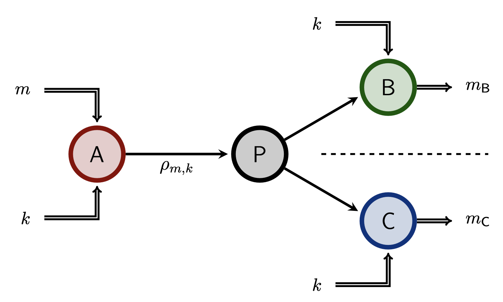
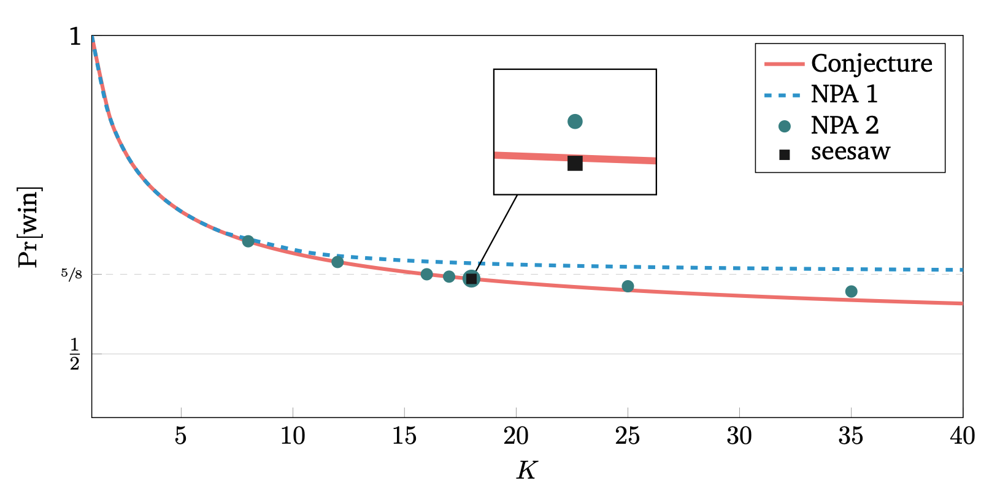
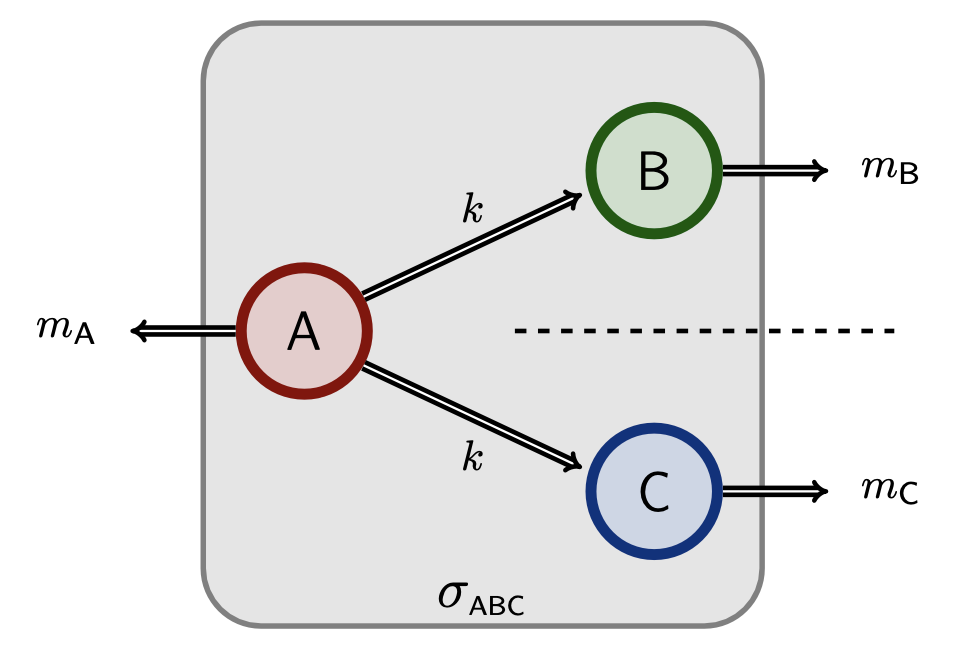
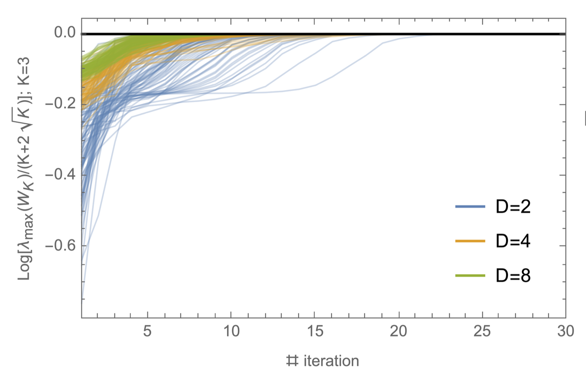
In quantum information,
nonlocal games are particularly useful for differentiating classical, quantum, and non-signalling correlations.
An example of differentiation is given by the principle of no-collapse of communication complexity, which is often interpreted as necessary for a feasible physical theory. It
is satisfied by quantum correlations but violated by some non-signalling ones.
In this work, we investigate this principle in the context of three nonlocal games related to graph theory, starting from the well-known graph isomorphism and graph coloring games, and introducing a new game, the vertex distance game, with a parameter $D\in\mathbb N$, that generalizes the former two to some extent.
For these three games, we prove that perfect non-signalling strategies collapse communication complexity under favorable conditions.
We also define a refinement of fractional isomorphism of graphs, namely $D$-fractional isomorphisms, and we show that this characterizes perfect non-signalling strategies for the vertex distance game.
Surprisingly, we observe that non-signalling strategies provide a finer distinction for the new game compared to classical and quantum strategies since the parameter $D$ is visible only in the non-signalling setting.
KEYWORDS: graph isomorphism, fractional isomorphism of graphs, graph coloring, quantum correlations, non-signalling correlations.
HIGHLIGHTS:
1. Non-signalling strategies for some graph games collapse communication complexity.
2. We study a new nonlocal game involving graphs: the vertex distance game.
3. We study a new hierarchy of fractional isomorphisms.
4. The generalized fractional isomorphisms are characterized in terms of nonlocal games.
5. Non-signalling strategies are finer than quantum ones in the vertex distance game.
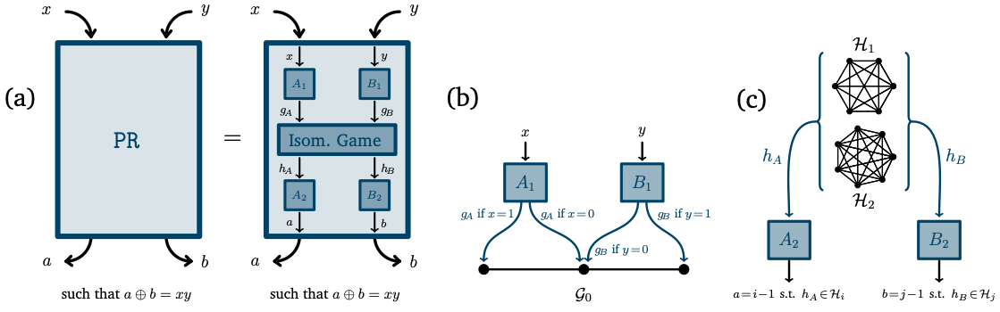
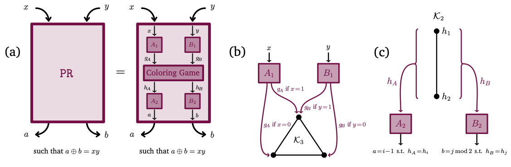
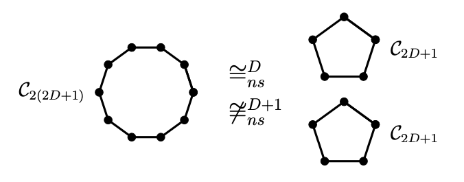
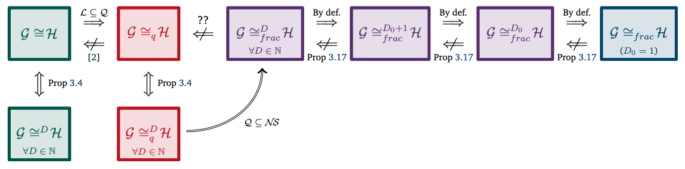
Communication complexity quantifies how difficult it is for two distant computers to evaluate a function $f(X,Y)$, where the strings $X$ and $Y$ are distributed to the first and second computer respectively, under the constraint of exchanging as few bits as possible.
Surprisingly, some nonlocal boxes, which are resources shared by the two computers, are so powerful that they allow to collapse communication complexity, in the sense that
any Boolean function $f$ can be correctly estimated with the exchange of only one bit of communication.
The Popescu-Rohrlich ($\mathtt{PR}$) box is an example of such a collapsing resource,
but a comprehensive description of the set of collapsing nonlocal boxes remains elusive.
In this work, we carry out an algebraic study of the structure of wirings connecting nonlocal boxes,
thus defining the notion of the "product of boxes" $\mathtt{P}\boxtimes\mathtt{Q}$, and we show related associativity and commutativity results.
This gives rise to the notion of the "orbit of a box", unveiling surprising geometrical properties about the alignment and parallelism of distilled boxes.
The power of this new framework is that it allows us to prove previously-reported numerical observations concerning the best way to wire consecutive boxes, and to numerically and analytically recover recently-identified noisy $\mathtt{PR}$ boxes that collapse communication complexity for different types of noise models.
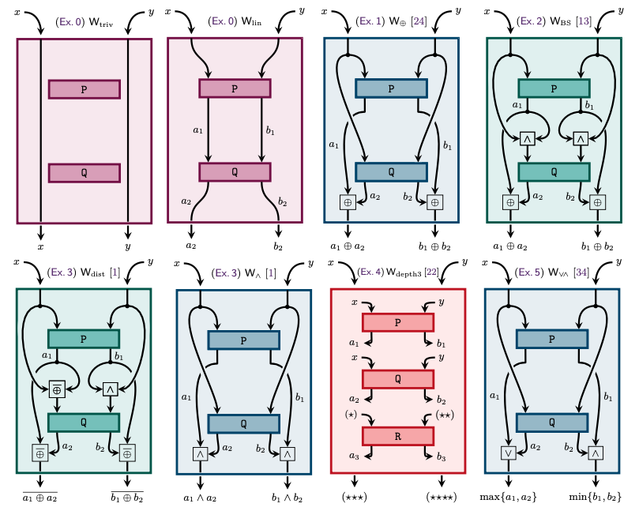
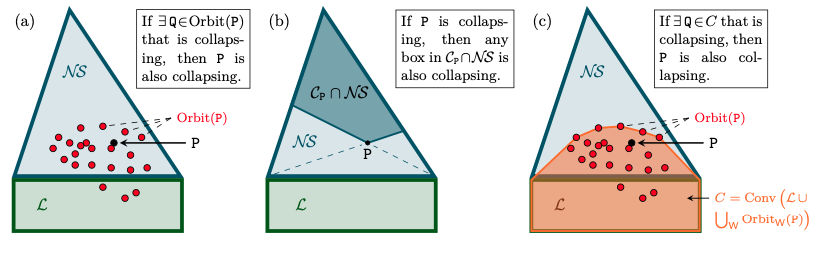
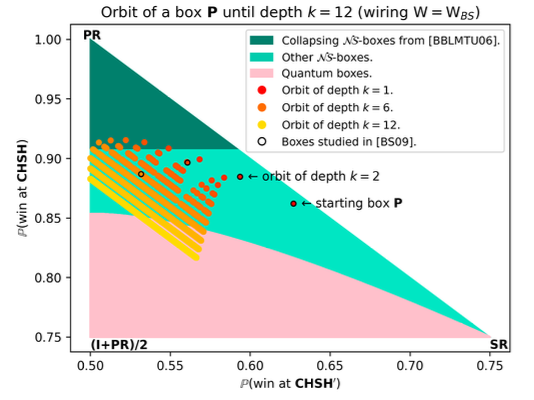
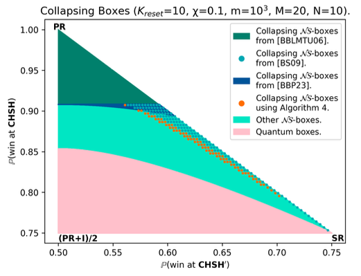
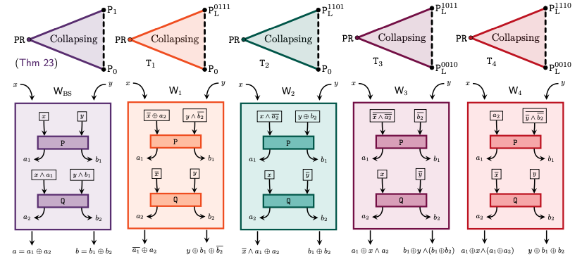
Non-signalling boxes ($\mathcal{N\!S}$) are theoretical resources
defined by the principle of no-faster-than-light communication. They generalize quantum correlations, and some of them are known to collapse communication complexity ($\mathcal{CC}$).
However, this collapse is strongly believed to be unachievable in Nature, so its study provides intuition on which theories are unrealistic.
In the present letter, we find a better sufficient condition for a nonlocal box to collapse $\mathcal{CC}$, thus extending the known collapsing region. In some slices of $\mathcal{N\!S}$, we show this condition coincides with an area outside of an ellipse.
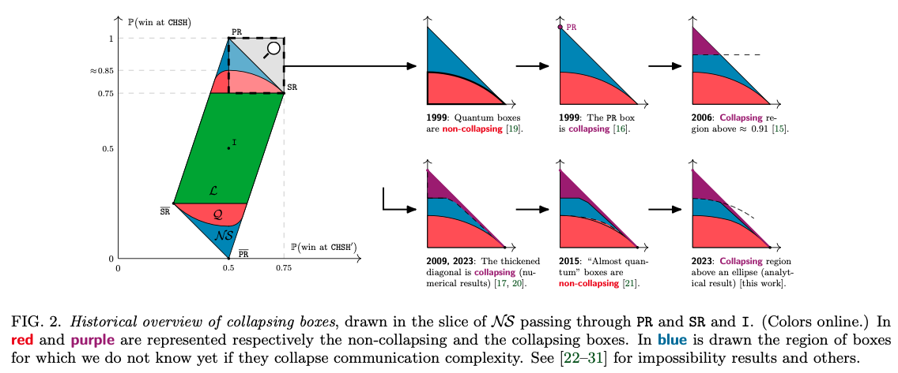
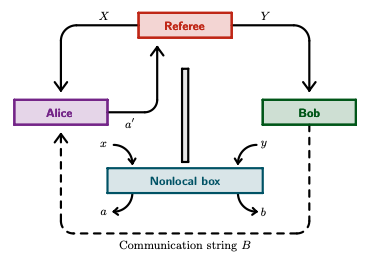
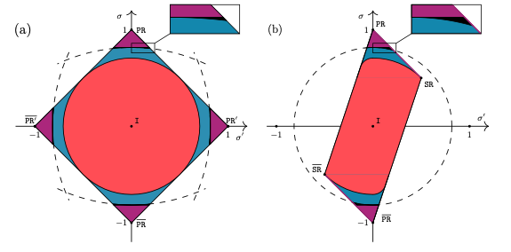
The famous $\texttt{CHSH}$ game displays strict demarcations between three canonical families of correlations known as classical $\mathcal{L}$, quantum $\mathcal{Q}$ and non-signalling $\mathcal{N\!S}$.
Although Alice and Bob
cannot win more than 75% of probability in the classical case (Bell's Inequality),
they can outperform this limit as long as they are provided with quantum correlations, thereby reaching Tsirelson's Bound $\approx$ 85%.
Doing even better, post-quantum strategies, formalized with non-local boxes, can win with up to 100% probability, yet without violating non-signalling axiom (no faster-than-light communication).
Among many attempts, communication complexity is conjectured to provide an answer: as opposed to quantum correlations which are known to induce non-trivial communication complexity, some post-quantum boxes are shown to render it trivial.
To this day, the question is still open, and in the present report, after making a detailed historical overview, we provide a new partial answer.
We propose a new approach to distillation with what we call the algebra of boxes and orbit of a box, which leads to disclosing new trivial areas, some numerically and others explicitly.
The main aim of this project is to give an unusual approach of singular homology theory through algebraic topology, studying the celebrated Dold-Thom theorem which is at the junction of both: \[ \widetilde H_n(X;\, \mathbb Z)=\pi_{n+1}\left(SP(\Sigma \widetilde X)\right). \] After considering elementary concepts of category theory, we will study the notions of pushout and exact sequence. Then, troughout the whole report, we will introduce some fundamental tools such as suspensions, reduced cones, cofibrations or CW-complexes, which will lead us to the proof of the Dold-Thom theorem.
Icons provided by FontAwesome. LaTeX equations displayed using MathJax.